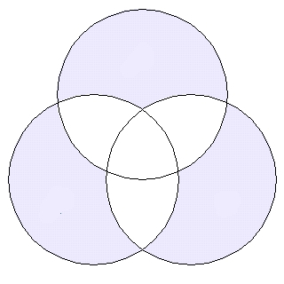

This was a "scrum" puzzle: several people on the team could work on it
at the same time.
The following doesn't capture the puzzle's frantic collaboration, just the raw content:

◯ _ _ _
14 pounds equals one of these, if you're a Brit.
A chauffeur, or a program that allows hardware to communicate with a computer's operating system.
A doorstop is an example of this, one of the six simple machines.
The "Great Pacific Garbage Patch" is mostly comprised of micro-particles of this.
This element, also the name of a household appliance, is one of ten whose name and chemical symbol do not start with the same letter.
This one-time Supreme Court nominee shares his last name with a term for a decorative wreath of flowers.
AS · DR · ER · GAR · GE · IR · IV · LA · ND · NE · ON · PL · STO · TIC · WED
_ ◯ _ _ _ _ _
The 6th largest privately held company in the US, this candy manufacturer counts 3 Musketeers and Milky Way as two of its brands.
This Sega video game console was the 32-bit successor to the Genesis.
This company gives its name to an Art Deco-style skyscraper in New York City, at one time the tallest building in the world.
This knife, primarily used for fighting, was developed by Jim Black in the 1800s and typically features a crossguard and a sheath.
This movie about a pregnant teenager won the Academy Award for Best Original Screenplay in 2007.
This ultra-luxury car manufacturer is perhaps best known for its logo, which features the letter "B" flanked by a pair of wings.
BE · BOW · CH · ER · EY · IE · JU · MA · NO · NTL · RN · RS · RY · SA · SL · TU
_ _ ◯ _ _ _ _
Founded in 1908, this company's name has entered common parlance as a synonym for a vacuum cleaner.
She had a small farm animal according to one song, and was proud according to another.
The fictional son of Poseidon, he made his debut in 2005's The Lightning Thief.
The first name of actress Bonham Carter, this word's origin comes from the Greek word for light.
This guitar manufacturer based in El Cajon, California, is the (fittingly) preferred brand of 2014's top selling artist.
This seaside city is the home of the US Naval Academy.
ANN · APO · CKS · ER · HE · HO · JA · LE · LIS · MA · NA · ON · OR · OV · RY · TA · YL
◯ _ _ _
In Chinese, this animal's name is biànsèlóng, which literally translates to "changing-color dragon".
In traditional Christianity, it belongs to one of three hierarchical Spheres.
This brand of freeze-them-yourself popsicles comes in such electrifying flavors as "Sir Isaac Lime" and "Alexander the Grape".
This computer abbreviation is used to describe memory that allows data to retrieved in near-constant time regardless of where in memory that data lives.
This oddly-spelled piece of maritime equipment has a disputed etymology — possibly deriving from the Latin boia, or "chain".
You might hear this term for a fast-moving low pressure system the next time you get a manicure.
AM · AN · BU · CH · CL · EL · EON · ER · GEL · IPP · M · OT · OY · RA · TER
_ ◯ _ _ _
A commonly used name for a powder made by grinding a grain such as wheat.
One of the largest pharmaceutical manufacturers in the world, this company was forced to recall the arthritis medication Vioxx in 2004.
This English brewer and physicist spent much of his research trying to find the mechanical equivalent of heat.
This computer programming language, widely used in the past as a teaching aid, was named for a French philosopher and mathematician.
This eccentric scientist famously feuded with Edison over the best distribution method of electricity.
This edible fruit has over 7,500 cultivars, including Jazz, Ambrosia, and Pink Lady.
AL · APP · CK · FL · JO · LA · LE · MER · OUR · PA · SC · TES · ULE
_ _ _ ◯ _ _
In the Old Testament, he deceived his blind father and stole his older brother Esau's birthright.
Not to be confused with its neighbor to the south, this West African country contains some of the world's largest uranium deposits.
Ten kings of France bore this name, more than any other except for Louis.
This retail goods behemoth surpassed Microsoft as the most valuable public company in the world in 2019.
This small landlocked country straddles the border between France and Spain.
This term for a small scrap of paper gained widespread public recognition in the aftermath of the 2000 US Presidential election.
AD · AM · AN · AZ · CH · CHA · COB · DOR · ES · GER · JA · NI · ON · RA · RL